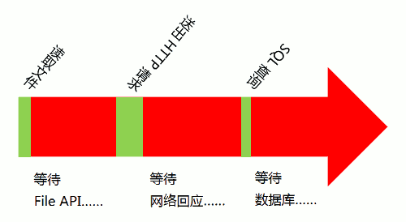

单线程模型
含义
单线程模型指的是，JavaScript只在一个线程上运行。也就是说，JavaScript同时只能执行一个任务，其他任务都必须在后面排队等待。
注意，JavaScript只在一个线程上运行，不代表JavaScript引擎只有一个线程。事实上，JavaScript引擎有多个线程，单个脚本只能在一个线程上运行，其他线程都是在后台配合。
JavaScript之所以采用单线程，而不是多线程，跟历史有关系。JavaScript从诞生起就是单线程，原因是不想让浏览器变得太复杂，因为多线程需要共享资源、且有可能修改彼此的运行结果，对于一种网页脚本语言来说，这就太复杂了。比如，假定JavaScript同时有两个线程，一个线程在某个DOM节点上添加内容，另一个线程删除了这个节点，这时浏览器应该以哪个线程为准？所以，为了避免复杂性，从一诞生，JavaScript就是单线程，这已经成了这门语言的核心特征，将来也不会改变。
为了利用多核CPU的计算能力，HTML5提出Web Worker标准，允许JavaScript脚本创建多个线程，但是子线程完全受主线程控制，且不得操作DOM。所以，这个新标准并没有改变JavaScript单线程的本质。
单线程模型带来了一些问题，主要是新的任务被加在队列的尾部，只有前面的所有任务运行结束，才会轮到它执行。如果有一个任务特别耗时，后面的任务都会停在那里等待，造成浏览器失去响应，又称“假死”。为了避免“假死”，当某个操作在一定时间后仍无法结束，浏览器就会跳出提示框，询问用户是否要强行停止脚本运行。
如果排队是因为计算量大，CPU忙不过来，倒也算了，但是很多时候CPU是闲着的，因为IO设备（输入输出设备）很慢（比如Ajax操作从网络读取数据），不得不等着结果出来，再往下执行。JavaScript语言的设计者意识到，这时CPU完全可以不管IO设备，挂起处于等待中的任务，先运行排在后面的任务。等到IO设备返回了结果，再回过头，把挂起的任务继续执行下去。这种机制就是JavaScript内部采用的Event Loop机制。
消息队列
JavaScript运行时，除了一个运行线程，引擎还提供一个消息队列（message queue），里面是各种需要当前程序处理的消息。新的消息进入队列的时候，会自动排在队列的尾端。
运行线程只要发现消息队列不为空，就会取出排在第一位的那个消息，执行它对应的回调函数。等到执行完，再取出排在第二位的消息，不断循环，直到消息队列变空为止。
每条消息与一个回调函数相联系，也就是说，程序只要收到这条消息，就会执行对应的函数。另一方面，进入消息队列的消息，必须有对应的回调函数。否则这个消息就会遗失，不会进入消息队列。举例来说，鼠标点击就会产生一条消息，报告click事件发生了。如果没有回调函数，这个消息就遗失了。如果有回调函数，这个消息进入消息队列。等到程序收到这个消息，就会执行click事件的回调函数。
另一种情况是setTimeout会在指定时间向消息队列添加一条消息。如果消息队列之中，此时没有其他消息，这条消息会立即得到处理；否则，这条消息会不得不等到其他消息处理完，才会得到处理。因此，setTimeout指定的执行时间，只是一个最早可能发生的时间，并不能保证一定会在那个时间发生。
一旦当前执行栈空了，消息队列就会取出排在第一位的那条消息，传入程序。程序开始执行对应的回调函数，等到执行完，再处理下一条消息。
Event Loop
所谓Event Loop机制，指的是一种内部循环，用来一轮又一轮地处理消息队列之中的消息，即执行对应的回调函数。
Wikipedia的定义是：“Event Loop是一个程序结构，用于等待和发送消息和事件（a programming construct that waits for and dispatches events or messages in a program）”。可以就把Event Loop理解成动态更新的消息队列本身。
下面是一些常见的JavaScript任务。
- 执行JavaScript代码
- 对用户的输入（包含鼠标点击、键盘输入等等）做出反应
- 处理异步的网络请求
所有任务可以分成两种，一种是同步任务（synchronous），另一种是异步任务（asynchronous）。
同步任务指的是，在JavaScript执行进程上排队执行的任务，只有前一个任务执行完毕，才能执行后一个任务；异步任务指的是，不进入JavaScript执行进程、而进入“任务队列”（task queue）的任务，只有“任务队列”通知主进程，某个异步任务可以执行了，该任务（采用回调函数的形式）才会进入JavaScript进程执行。
以Ajax操作为例，它可以当作同步任务处理，也可以当作异步任务处理，由开发者决定。如果是同步任务，主线程就等着Ajax操作返回结果，再往下执行；如果是异步任务，该任务直接进入“任务队列”，JavaScript进程跳过Ajax操作，直接往下执行，等到Ajax操作有了结果，JavaScript进程再执行对应的回调函数。
也就是说，虽然JavaScript只有一个进程用来执行，但是并行的还有其他进程（比如，处理定时器的进程、处理用户输入的进程、处理网络通信的进程等等）。这些进程通过向任务队列添加任务，实现与JavaScript进程通信。
想要理解Event Loop，就要从程序的运行模式讲起。运行以后的程序叫做“进程”（process），一般情况下，一个进程一次只能执行一个任务。如果有很多任务需要执行，不外乎三种解决方法。
-
排队。因为一个进程一次只能执行一个任务，只好等前面的任务执行完了，再执行后面的任务。
-
新建进程。使用fork命令，为每个任务新建一个进程。
-
新建线程。因为进程太耗费资源，所以如今的程序往往允许一个进程包含多个线程，由线程去完成任务。
如果某个任务很耗时，比如涉及很多I/O（输入/输出）操作，那么线程的运行大概是下面的样子。

上图的绿色部分是程序的运行时间，红色部分是等待时间。可以看到，由于I/O操作很慢，所以这个线程的大部分运行时间都在空等I/O操作的返回结果。这种运行方式称为”同步模式”（synchronous I/O）。
如果采用多线程，同时运行多个任务，那很可能就是下面这样。
上图表明，多线程不仅占用多倍的系统资源，也闲置多倍的资源，这显然不合理。

上图主线程的绿色部分，还是表示运行时间，而橙色部分表示空闲时间。每当遇到I/O的时候，主线程就让Event Loop线程去通知相应的I/O程序，然后接着往后运行，所以不存在红色的等待时间。等到I/O程序完成操作，Event Loop线程再把结果返回主线程。主线程就调用事先设定的回调函数，完成整个任务。
可以看到，由于多出了橙色的空闲时间，所以主线程得以运行更多的任务，这就提高了效率。这种运行方式称为”异步模式“（asynchronous I/O）。
这正是JavaScript语言的运行方式。单线程模型虽然对JavaScript构成了很大的限制，但也因此使它具备了其他语言不具备的优势。如果部署得好，JavaScript程序是不会出现堵塞的，这就是为什么node.js平台可以用很少的资源，应付大流量访问的原因。
如果有大量的异步任务（实际情况就是这样），它们会在“消息队列”中产生大量的消息。这些消息排成队，等候进入主线程。本质上，“消息队列”就是一个“先进先出”的数据结构。比如，点击鼠标就产生一系列消息（各种事件），mousedown事件排在mouseup事件前面，mouseup事件又排在click事件的前面。